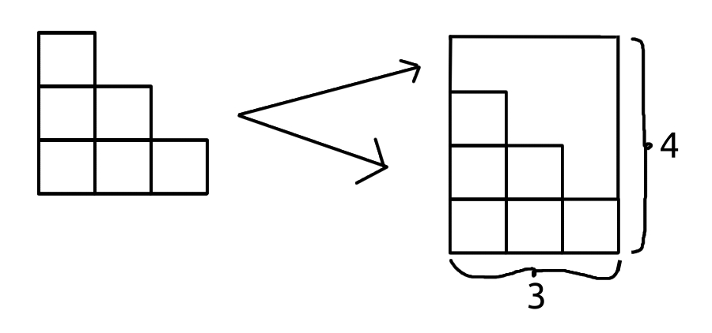

Strange Formulas - Finding a Large Triangular Number
if I told you that the "formula", the recipe for finding the area of a square, was x*x, it should now seem pretty intuitive. Try finding the side length of a square with an area of 16 cm2.
if you will remember which number times itself is 16, it should be easy. Now, there are some less intuitive formulas in math... unless introduced properly.
The typical triangle area formula is easy to grasp once you have seen this one. A triangular number, and by extension the area of any sixty degree triangle, is...
You take the triangle and put it on top of itself. You now have a rectangle. If it was a perfect triangle, this would be a square, but we can find the area of a rectangle just as easily. It is the two varying side lengths multiplied.
The rectangle's new side will always have a side length that is larger by one than the last number of the triangular number, how many steps we have gone from zero. For triangular number three, it is going to be three plus one. For triangular number 100, it is 100 plus one.
Now, if you find the area of that, you will find that 100*101 is equal to 10100. Half of that should be our triangular number. Another way of writing half is "divided by two", like evenly dividing a pie for two - a problem for certain numbers, triangular numbers' areas always include at least an even number, so you don't have to worry about not being able to divide by two!
The 100th triangular number is 5050. You may attempt to, as we go through this, calculate the 10th triangular number, and calculate another triangular number from the first to 100th.
The formula for the nth triangular number is (n)(n+1). Writing two parentheses next to each other is another way to represent multiplication. It is cute.